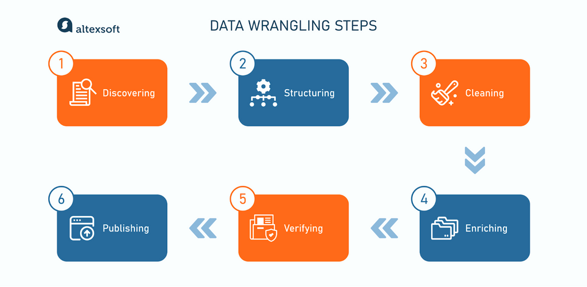
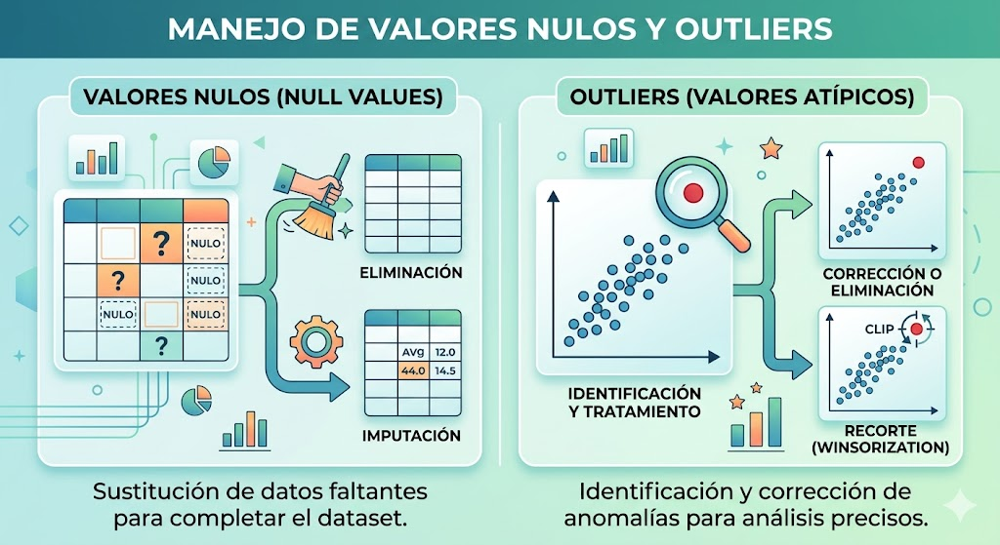
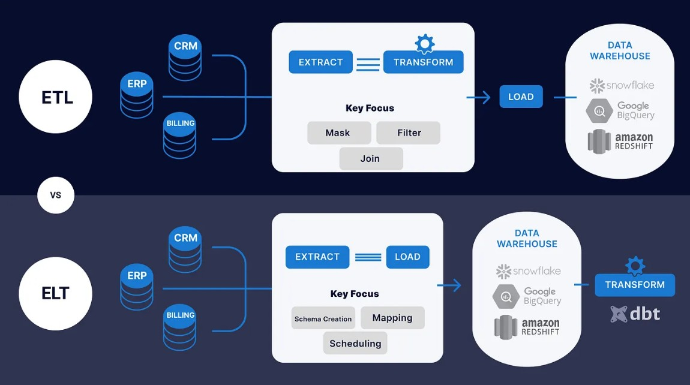

Limpieza & Transformación
Limpieza & Transformación corrige errores y unifica formatos. Manejo de nulos y outliers mejora la calidad de los datos. ETL/ELT automatiza pipelines para mover y procesar datos. Feature Engineering crea variables clave para modelos de ML.

Data Wrangling y calidad de datos
Data Wrangling es el proceso de limpiar, estructurar y enriquecer datos crudos para volverlos útiles en análisis o modelos. Calidad de datos asegura que la información sea precisa, completa, consistente y válida.

Manejo de valores nulos y outliers
El manejo de valores nulos asegura la integridad de los datos mediante la eliminación o imputación de registros incompletos. Por su parte, el tratamiento de outliers permite identificar y corregir anomalías que podrían sesgar los análisis estadísticos y el rendimiento de los modelos.

ETL, ELT y Pipelines
Los procesos ETL y ELT permiten transformar y preparar datos a escala, ya sea antes o después de cargarlos en el data warehouse. Un pipeline de datos orquesta estas etapas de forma automatizada, asegurando calidad, trazabilidad y disponibilidad continua. Juntos habilitan analítica confiable, modelos avanzados y decisiones basadas en datos en tiempo real.

Feature Engineering
El Feature Engineering es el proceso de transformar y crear variables (features) a partir de datos brutos para mejorar el rendimiento de un modelo de Machine Learning. Incluye seleccionar, modificar o generar características relevantes que ayuden al modelo a aprender patrones de forma más precisa.
“Podemos considerar que el razonamiento es una forma de cálculo.” — Leibniz